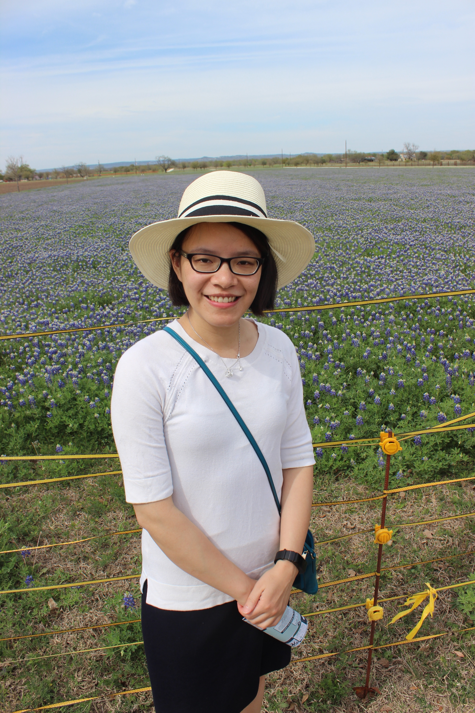

About Me
 I moved from Chicago to Austin three years ago because of work. I enjoy the hot weather in Texas. Without snow, make my life much easier. When I have free time, I like to cook and take care of my flowers.
As a software engineer, performing system test, solving technical problem and reading/analyzing error messages are my daily jobs.However, I want to change from testing to development. I don’t want to find/point out problem everyday. I want to create something.